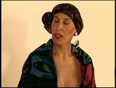
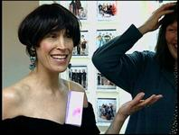

| <Libby | Reconstruction> |
{kind=link}
I'm an artist and an art teacher. Libby was saying she felt like a number, and I said I feel more like a number now than I did in treatment. Then people would greet me, you know, I came to know people. They told me I look nice or something. Now I just feel like, well, did it, been there, did my treatment, done with the treatment, no big deal now, you know. I look normal now. It's kind of like, well, I had cancer, it's gone.
Now I feel like a statistic. Well, in 1997, 165,000 women were diagnosed with breast cancer, one of whom was me. Now I'm waiting to see what they say in 2002. Am I going to be one of the 35,000 who survives?
I feel much more anonymous and inconspicuous now than I did during treatment, especially because everybody was revolving around me during treatment. Now no one asks what it's like to wake up every day and go, oh, Jesus, am I okay today? What's wrong today? People don't want to know I'm still sick. I look normal. I look fine. Well, I looked great before I had cancer. You couldn't tell by looking at me that I was sick. I just want the fear to be done so that I can really be normal.
I go once every three months to my oncologist. I see my plastic surgeon every six months. I see my radiologist every six months. I see my breast surgeon every six months. We stagger the appointments. I'm probably going up to Boston to see my doctors once every month, month and a half.
Where do I go from here with my life? Well, here's the problem. For a while I did live my life differently, and then I wake up and find that I'm in the same routine. I've gotten back into the flow of school and the same kind of frenetic pace, and I don't rest the same way that I had been, etc. The difference is now at least I'll stop myself and say, whoa, where are you going? Come back, come back, take care of yourself, relax. So that's good.
I don't know if I'll stay in teaching. I question more. What do I want to do? Life is short, so every day I think about that and as I'm going to school, I think ooh, better have fun, because who knows? Who knows what will happen tomorrow?
It's frustrating now because my health is not the same. I have more allergies now. I'm still having trouble with my bionic boob. It's a little larger than the other one, so there's a little jealousy reigning on my chest. So I have to take care of that. You know, muscle problems back here. It feels like my bra is too tight. So that stuff is what I have to deal with at this point in time. But I know I want to make life changes. I think I'm going to go to France for a year and live there and just do things. I don't put things off the same way I used to.
What would be the one thing I would tell another woman who was newly diagnosed with breast cancer? Actually I'd have to tell her two or three things. First off, there is life after the diagnosis and the cancer, and things get easier once she makes a decision on treatment. And the other thing I would tell her is, talk to as many people as possible who have had the treatments that she's considering. The reconstruction, the flap, an epidural, cytoxin, adriamycin, 5FU, the drugs they give you to take. Talk to as many women as possible who have gone through the process. I did talk to some people about certain parts of the procedure and not about others. Had I talked to more people, I might have changed my decisions. And I'd tell them that there's still fun out here on the other side.
Why did I get cancer? Maybe I drank too much diet soda when I was a kid. I drank it by the gallon. Maybe it runs in my family. My mother died of breast cancer. My aunts, her sisters, both had breast cancer. Maybe I'm living in a toxic waste dump. Maybe I had the wrong attitude. I was depressed. Maybe that contributed to it. Maybe the universe is trying to tell me something. I don't know. I thought I would be cured if I ate macrobiotics, but now I realize that the biscotti and cookies and the Ben and Jerry's might be just the thing to save me.
|  |  |
{kind=link}
{kind=link}
Elsa Carol never wore a wig, or at least she never took the price tags off the wigs she bought. Being an artist with a great flair for fashion, she found unusual fabrics and made herself turbans. Originally she learned to make the turbans from a videotape at Beth Israel Hospital. But of course she took off from the video and made the turbans her own.
Carol Losing your hair seems traumatic, but there can be some fun and wonderfully close moments. The first time I lost my hair to chemo (it's been twice now), I was freaked. I actually was in the hospital at the time and it started falling out in the shower. I called Audrey Greenway to bring the buzzer, and we had a hair-cutting party. Janie Matlaw took pictures.
I tried the wig route. Well, actually, Janie, Audrey, and I went to try them on. I was a blonde for a few minutes, and then a redhead with the long straight locks I had always wanted. Then there were the cornrows. The blonde wig didn't suit me as well as I had hoped. I looked like Patrick Swayze in To Wong Foo. I had to agree that my natural hair color looked much more suited to me. I didn't end up buying a wig.
I preferred wearing turbans, which I tied using several scarves together. It was fun combining patterns and even putting on a pin, too. The Dana Farber has a video called "Scarves" in their lending library. I watched it with Audrey and we both wrapped ourselves in scarves that we got at Marshall's and Goodwill, trying out the different techniques.
I have to tell you that most days I felt quite exotic and lovely when I had my turban on. I became a hat-wearer, which I hadn't been. Again, great fun to try them on with a friend and laugh and carry on. Libby and I toured the cosmetic department looking for just the right purple eyeliner. Did I get creative with that!
The second time I lost my hair it was much less traumatic. I didn't feel much like wearing anything on my head. I teach art at a high school and before my hair fell out I dyed it fuschia. My students told me what kind of dyes, bleach, etc. to use, and how. Then when it started to go, a colleague at school, Jody Craven, buzzed it for me. Because many of the boys wear their hair buzzed down to the scalp, I felt pretty comfortable having my bald head uncovered, at first at school and then more and more in public. To my eyes, the world looked the same. One day at the supermarket, a woman gave me thumbs up when she saw me without any headgear.
| <Libby | Reconstruction> |
Find Elsa's Books


Please change your links and bookmarks to elsadorfman.com!
Elsa thanks her cybergodmother, photo.net, her longtime, most generous host at furfly.com, and her current web host Mike Sisk at TCP/IP Ranch, LLC.
Copyright 1970-2010 © Elsa Dorfman.
Inquiries for the use of Elsa's content are welcomed!
Please
read these guidelines.
Contact
Elsa Dorfman via email or send Website Feedback to her webmaster.